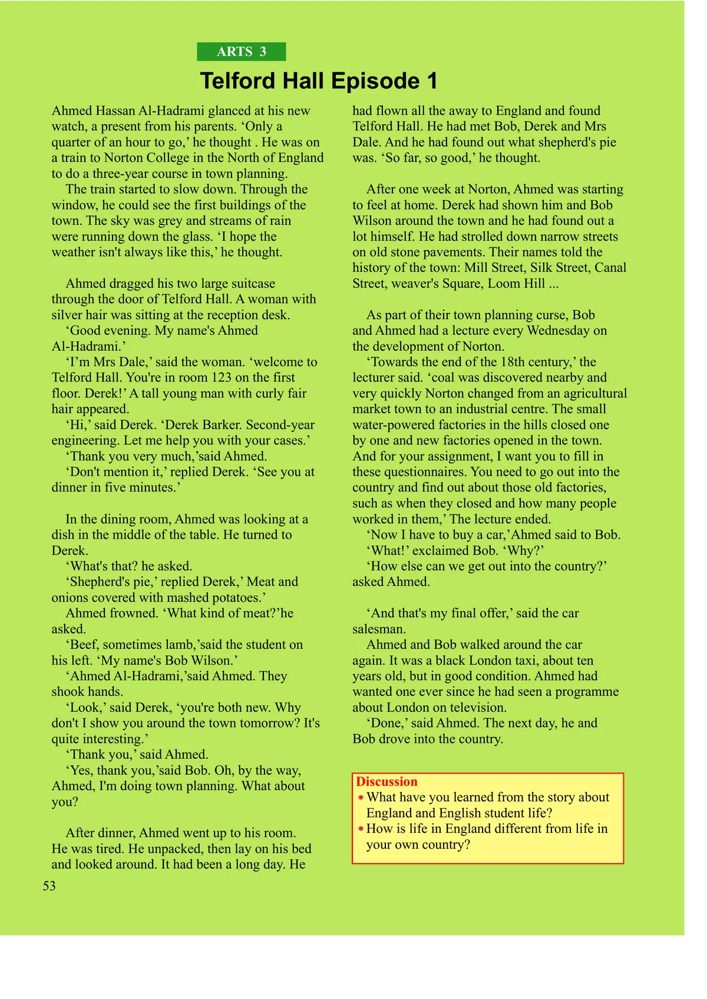

ARTS 3 Telford Hall Episode 1
[Complete two-column story page available offline in assets/ref/pb_p053.webp; structured episode summary & verbatim cue anchors below for WB Arts 3 A–E:]
Part 1 (Arrival on the train): Ahmed Hassan Al-Hadrami glanced at his new watch (a present from his parents), 15 minutes from Norton College in the North of England for a three-year course in town planning. Seeing grey skies and streams of rain running down the window glass, he hoped the weather wasn't always like this.
Part 2 (Telford Hall & Dining Room): Ahmed dragged 'his two large suitcase' into Telford Hall, where silver-haired receptionist Mrs Dale placed him in room 123 (1st floor) and called tall, fair-haired second-year engineering student Derek Barker to carry his cases before dinner in 5 minutes. At dinner, Ahmed asked about 'Shepherd's pie' (meat and onions covered with mashed potatoes), frowned to check what kind of meat ('Beef, sometimes lamb') and met neighbour Bob Wilson (also studying town planning). Derek offered to show both new students around town tomorrow. After dinner, tired from flying to England and finding Telford Hall, Ahmed unpacked and thought 'So far, so good'.
Part 3 (Exploring Norton & The Lecture): Within one week Ahmed felt at home, strolling along old stone pavements: Mill Street, Silk Street, Canal Street, weaver's Square, Loom Hill... In their Wednesday lecture on Norton's development ('As part of their town planning curse,' [printed typo for 'course']), the lecturer explained coal discovery in the late 18th century changed Norton from an agricultural market town to an industrial centre; small water-powered hill factories closed as town factories opened. He gave them questionnaires to investigate those old factories out in the country.
Part 4 (Buying a car): To reach the countryside, Ahmed bargained with a car salesman and bought a ten-year-old black London taxi in good condition (which he had wanted ever since seeing a London TV programme); next day he and Bob drove into the country.
Discussion: 1 What have you learned from the story about England and English student life? 2 How is life in England different from life in your own country?two large suitcase (مفرد بدل جمع)، town planning curse (curse بدل course)، all the away بدل all the way، weaver's Square بحرف صغير، ومسافات/علامات اقتباس ساقطة (. 'welcome، 'What's that?، . 'coal). حُفظت المواضع المطبوعة أوفلاين في pb_p053.webp ووُثّقت في REVIEW_NEEDED.md.[
{
"num": 1,
"prompt": "1 the college where Ahmed is studying: ______",
"answers": [
"Norton College"
]
},
{
"num": 2,
"prompt": "2 the town which the college is in: ______",
"answers": [
"Norton"
]
},
{
"num": 3,
"prompt": "3 the place where Ahmed is staying: ______",
"answers": [
"Telford Hall"
]
},
{
"num": 4,
"prompt": "4 the number of his room: ______",
"answers": [
"123",
"room 123"
]
},
{
"num": 5,
"prompt": "5 the receptionist or housekeeper: ______",
"answers": [
"Mrs Dale"
]
},
{
"num": 6,
"prompt": "6 some other students in Ahmed's accommodation: ______",
"answers": [
"Derek Barker, Bob Wilson",
"Derek, Bob",
"Bob Wilson and Derek Barker"
]
},
{
"num": 7,
"prompt": "7 some old streets in the town: ______",
"answers": [
"Mill Street, Silk Street, Canal Street, weaver's Square, Loom Hill",
"Mill Street, Silk Street, Canal Street, Weaver's Square, Loom Hill"
]
}
][
{
"num": 1,
"question": "1 Ahmed would probably stay in England for three years because ______",
"model_answer": "he had come to Norton College to do a three-year course in town planning.",
"explain_ar": "الفقرة الأولى."
},
{
"num": 2,
"question": "2 Mrs Dale must be quite old because ______",
"model_answer": "she had silver hair.",
"explain_ar": "الشعر الفضي يدل على تقدم السن."
},
{
"num": 3,
"question": "3 Ahmed didn't unpack immediately he arrived because ______",
"model_answer": "dinner was in five minutes (Derek said 'See you at dinner in five minutes').",
"explain_ar": "تأجل تفريغ الحقائب إلى ما بعد العشاء."
},
{
"num": 4,
"question": "4 Derek offered to show Ahmed and Bob the town because ______",
"model_answer": "they were both new to Norton.",
"explain_ar": "قال ديريك: you're both new."
},
{
"num": 5,
"question": "5 Ahmed was tired at the end of his first day at Telford Hall because ______",
"model_answer": "he had flown all the way to England, travelled by train, found Telford Hall, met Derek, Bob and Mrs Dale, and it had been a long day.",
"explain_ar": "تعب السفر والوصول والتعرّف الأول."
},
{
"num": 6,
"question": "6 Ahmed and Bob became friends because ______",
"model_answer": "they sat beside each other at dinner, were both new and were both doing town planning.",
"explain_ar": "زمالة السكن والتخصص الواحد."
},
{
"num": 7,
"question": "7 The water-powered factories in the hills closed because ______",
"model_answer": "coal was discovered nearby at the end of the 18th century and new coal-powered factories opened in the town.",
"explain_ar": "الانتقال إلى الطاقة الفحمية في وسط المدينة الصناعية."
},
{
"num": 8,
"question": "8 Ahmed bought a car because ______",
"model_answer": "they needed to drive out into the country for their assignment on old factories (and he had always wanted a black London taxi).",
"explain_ar": "لحاجة البحث الميداني خارج المدينة."
}
][
{
"num": 2,
"question": "2 depressed",
"model_answer": "when he looked out of the train window at the grey sky and streams of rain running down the glass.",
"explain_ar": "الفقرة الثانية: الجو الكئيب الممطر."
},
{
"num": 3,
"question": "3 grateful",
"model_answer": "when Derek helped him with his heavy suitcases and offered to show him and Bob round Norton.",
"explain_ar": "قال 'Thank you very much'."
},
{
"num": 4,
"question": "4 nervous",
"model_answer": "when he arrived alone at Telford Hall (15 minutes to go, dragging two heavy suitcases) or hesitated before asking about the meat in Shepherd's pie.",
"explain_ar": "توتر البداية في بلد غريب."
},
{
"num": 5,
"question": "5 pleased",
"model_answer": "after dinner thinking 'So far, so good', when Bob turned out to be studying town planning too, and after one week feeling at home in Norton.",
"explain_ar": "الارتياح والبهجة بالتأقلم."
},
{
"num": 6,
"question": "6 worried",
"model_answer": "when he frowned looking at the unfamiliar dish ('What kind of meat?' — worried it might not be beef/lamb) or heard they had to get out into the country ('Now I have to buy a car').",
"explain_ar": "القلق بشأن الطعام الحلال وتكليف الخروج للريف."
}
]{
"pb_text_vs_image": "طُوبقت PB ص 53 مع pb-55.png وأُرفقت pb_p053.webp أوفلاين، مع توثيق الهفوات المطبعية الحرفية ('curse' بدل course، 'two large suitcase'، 'all the away').",
"wb_ocr_vs_image": "طُوبقت WB ص 84–85 مع wb-085.png وwb-086.png وحُلّت أنشطة B–D بالكامل."
}